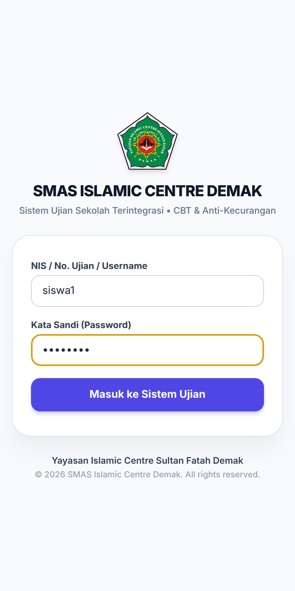
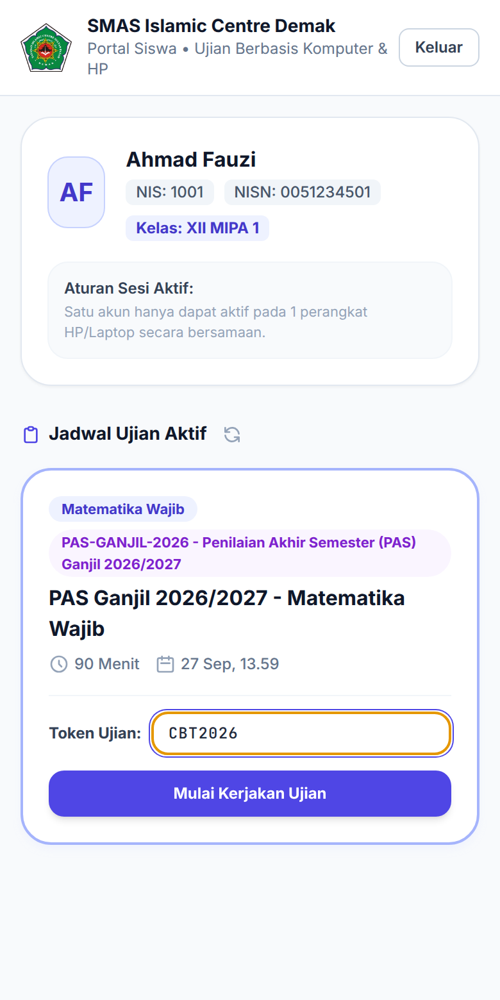
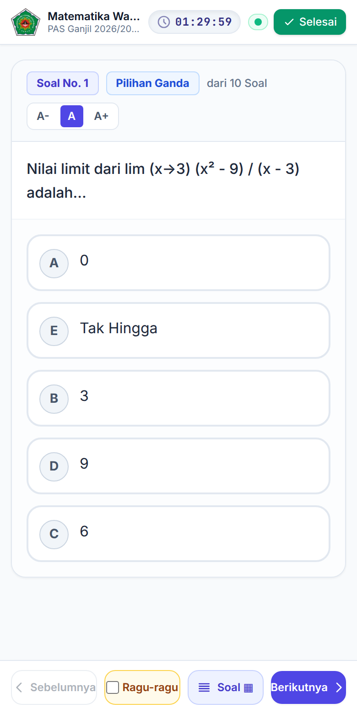
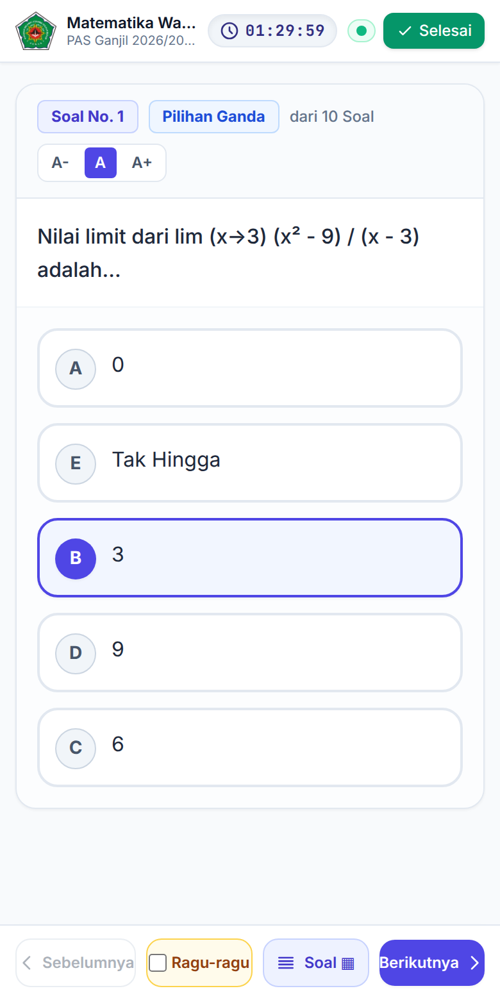
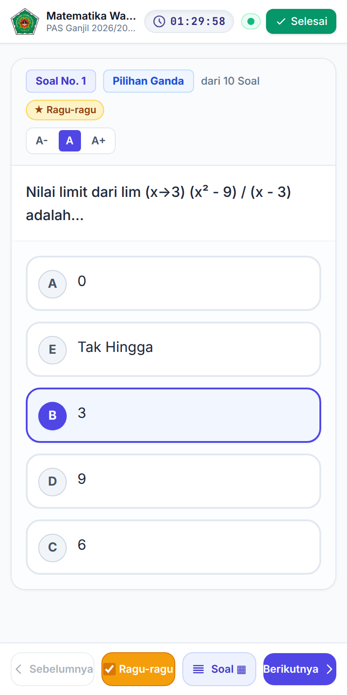
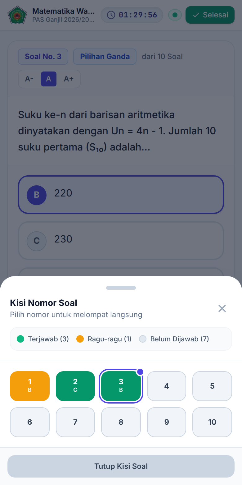
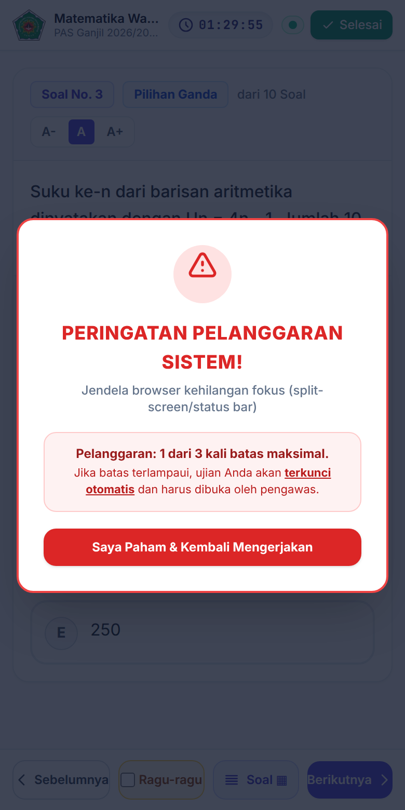
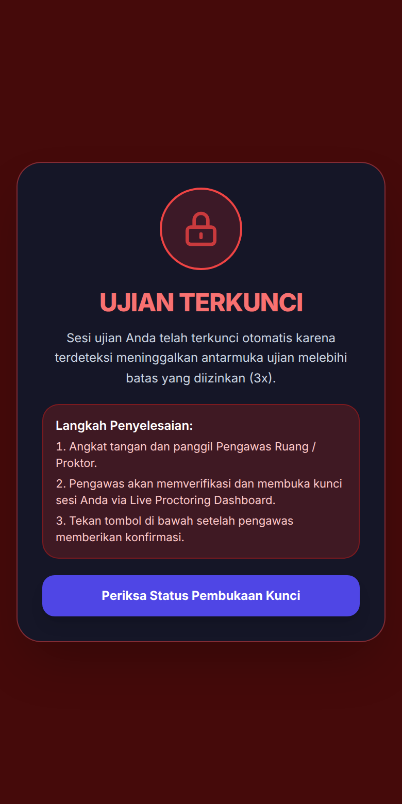
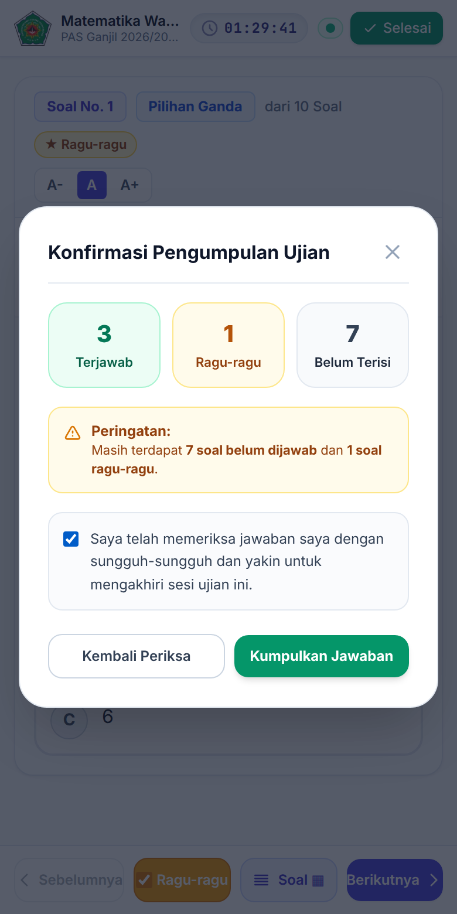
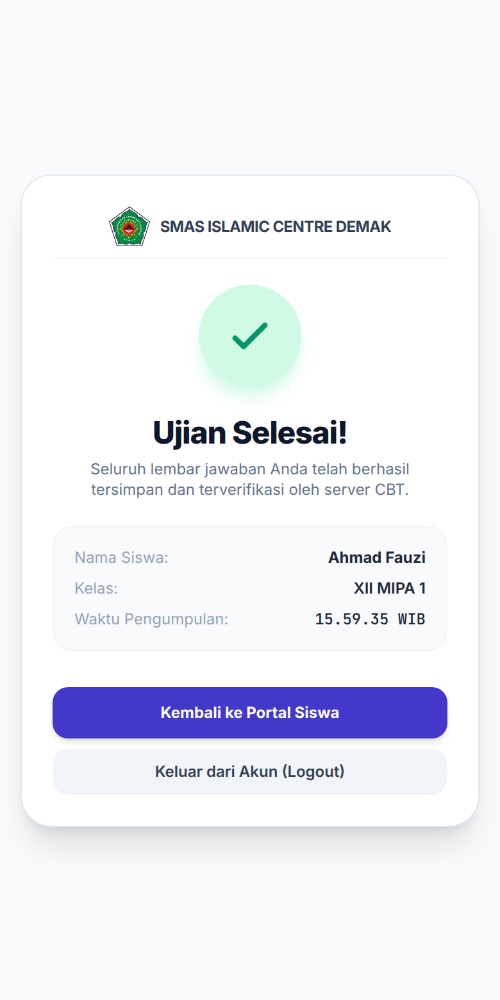

Isi Panduan
- 1Persiapan Sebelum UjianPerangkat, akun, dan hal yang perlu dibawa
- 2Masuk Akun dan Memulai UjianLogin, memilih jadwal, dan mengisi token
- 3Mengerjakan SoalMenjawab, ragu-ragu, kisi soal, dan waktu
- 4Aturan Layar UjianPeringatan pelanggaran dan ujian terkunci
- 5Mengumpulkan JawabanKonfirmasi dan halaman selesai
- 6Jika Ada MasalahPesan di layar, jaringan putus, HP mati
- 7Kartu RingkasSatu halaman untuk dibaca sebelum ujian
Bab 1Persiapan Sebelum Ujian
Ujian CBT dapat dikerjakan dari HP sendiri atau komputer sekolah. Siapkan hal berikut sebelum masuk ruang ujian.
Yang perlu disiapkan
- Baterai HP penuh atau bawa pengisi daya. Ujian bisa berlangsung hingga 90 menit atau lebih.
- Browser terbaru, misalnya Google Chrome. Ujian dibuka lewat browser, tidak perlu memasang aplikasi.
- Tersambung ke Wi-Fi sekolah sesuai arahan pengawas.
- Kartu peserta dari wali kelas, berisi No. Ujian dan password.
- Tutup aplikasi lain dan matikan notifikasi. Pesan yang muncul di layar bisa tercatat sebagai pelanggaran.
Akun yang dipakai
Masuk memakai salah satu dari:
- No. Ujian dan password yang tercetak di kartu peserta. Berlaku selama event ujian berlangsung.
- NIS atau username dan password akun yang diberikan sekolah.
Bab 2Masuk Akun dan Memulai Ujian
Kapan dipakai: di awal setiap sesi ujian, setelah pengawas mengumumkan token.



- Buka alamat ujian yang diberikan pengawas di browser, atau pindai QR di kartu peserta.
- Masuk dengan akun Anda. Isi NIS / No. Ujian / Username dan Kata Sandi, lalu ketuk Masuk ke Sistem Ujian.
- Cari ujian di bagian Jadwal Ujian Aktif. Cocokkan mata pelajaran dan durasinya. Jadwal baru muncul setelah jam ujian dimulai; jika daftar masih kosong, tunggu sebentar lalu ketuk ikon muat ulang di samping judul.
- Ketik token dari pengawas di kolom Token Ujian, contohnya CBT2026. Huruf besar atau kecil tidak berpengaruh.
- Ketuk Mulai Kerjakan Ujian. Layar berpindah ke mode layar penuh dan soal pertama tampil.
Bab 3Mengerjakan Soal
Layar ujian terdiri dari tiga bagian: bilah atas (waktu dan tombol Selesai), kartu soal di tengah, dan tombol navigasi di bawah.
| Bagian | Fungsinya |
|---|---|
| Jam hitung mundur | Sisa waktu Anda. Mengikuti jam server, jadi mengubah jam HP tidak berpengaruh. Berubah merah saat sisa waktu kurang dari 5 menit. Saat waktu habis, jawaban otomatis dikumpulkan. |
| Titik status | Hijau: jawaban sudah tersimpan di server. Kuning: sedang dikirim atau menunggu. Merah: jaringan putus, jawaban disimpan di HP dulu. |
| Selesai | Membuka konfirmasi untuk mengumpulkan ujian (Bab 5). |
| A- A A+ | Memperkecil atau memperbesar huruf soal. |
| Sebelumnya / Berikutnya | Pindah ke soal sebelum atau sesudahnya. |
| Ragu-ragu | Menandai soal yang ingin diperiksa lagi. Jawabannya tetap dihitung. |
| Soal | Membuka kisi nomor soal untuk melompat ke nomor mana pun. |
Menjawab soal



- Pilihan Ganda: ketuk salah satu pilihan. Untuk mengganti jawaban, ketuk pilihan lain.
- Jawaban Singkat: ketik jawaban di kolom yang tersedia. Huruf besar atau kecil tidak berpengaruh.
- Essay / Uraian: tulis jawaban lengkap di kolom teks. Soal essay dinilai guru setelah ujian.
Setiap jawaban langsung tersimpan. Tidak ada tombol simpan.
Membaca kisi soal
Ketuk Soal di bawah layar. Kotak hijau berarti sudah dijawab (huruf di bawah nomor adalah jawaban Anda), oranye berarti ragu-ragu, dan abu-abu berarti belum dijawab. Ketuk nomor untuk pindah ke soal itu, lalu ketuk Tutup Kisi Soal.
Bab 4Aturan Layar Ujian
Selama ujian, sistem mencatat setiap kali Anda meninggalkan layar ujian. Setiap catatan dihitung sebagai satu pelanggaran.
Yang dihitung sebagai pelanggaran
- Pindah ke aplikasi atau tab lain, termasuk membuka pesan WhatsApp.
- Menarik status bar, membuka layar terpisah (split screen), atau jendela lain mengambil fokus.
- Keluar dari mode layar penuh.


Peringatan dan kunci otomatis
- Sebelum batas tercapai, muncul Peringatan Pelanggaran Sistem! berisi jumlah pelanggaran Anda, misalnya "1 dari 3". Ketuk Saya Paham & Kembali Mengerjakan.
- Saat batas tercapai (jumlahnya ditentukan pada jadwal, biasanya 3 kali), layar berubah merah bertuliskan UJIAN TERKUNCI. Soal tidak bisa dikerjakan.
- Angkat tangan dan panggil pengawas. Pengawas memeriksa catatan pelanggaran, lalu membuka kunci dari layar pengawasan.
- Setelah pengawas memberi tanda, ketuk Periksa Status Pembukaan Kunci. Ujian bisa dilanjutkan, jawaban sebelumnya tetap ada.
Bab 5Mengumpulkan Jawaban
Kapan dipakai: setelah semua soal diperiksa, atau saat pengawas meminta mengumpulkan.


- Ketuk Selesai di pojok kanan atas.
- Baca ringkasannya: jumlah soal Terjawab, Ragu-ragu, dan Belum Terisi. Jika masih ada yang kosong, ketuk Kembali Periksa.
- Centang pernyataan "Saya telah memeriksa jawaban saya…".
- Ketuk Kumpulkan Jawaban. Halaman Ujian Selesai! tampil beserta nama, kelas, dan waktu pengumpulan.
- Ketuk Keluar dari Akun (Logout) jika memakai komputer sekolah atau perangkat bersama.
Bab 6Jika Ada Masalah
Jaringan putus di tengah ujian
Tetap kerjakan soal. Jawaban disimpan di HP (titik status merah) dan otomatis dikirim ketika jaringan kembali. Jangan menutup browser atau membersihkan data browser sebelum titik status kembali hijau.
HP mati atau rusak
- Lapor ke pengawas.
- Masuk kembali dengan akun yang sama di perangkat pengganti. Perangkat lama otomatis keluar.
- Isi token yang sama, lalu ketuk Mulai Kerjakan Ujian. Ujian berlanjut dengan sisa waktu dan jawaban yang sudah terkirim.
Pesan yang mungkin muncul
| Pesan di layar | Yang perlu dilakukan |
|---|---|
| username atau password salah | Periksa ejaan No. Ujian atau username dan password. Jika tetap gagal, lapor wali kelas atau pengawas. |
| Token Belum Diisi | Isi kolom token sebelum mengetuk Mulai Kerjakan Ujian. |
| token ujian salah atau tidak valid | Periksa ulang token. Tanyakan kembali ke pengawas. |
| jadwal ujian belum dimulai atau sudah berakhir | Tunggu jam mulai. Jika jam sudah lewat, lapor pengawas. |
| ujian ini belum dibuka atau telah dinonaktifkan | Tunggu arahan pengawas. |
| ujian Anda terkunci karena kuota pelanggaran terlampaui | Panggil pengawas untuk membuka kunci (Bab 4). |
| ujian ini telah Anda selesaikan dan kumpulkan | Ujian sudah dikumpulkan dan tidak bisa dibuka lagi. |
| Akun Anda telah digunakan untuk login di perangkat lain | Akun Anda baru saja dipakai login di perangkat lain. Segera lapor pengawas. |
| Sesi login Anda telah diakhiri | Pengawas atau admin mengakhiri sesi Anda. Masuk kembali, lalu isi token lagi. |
Bab 7Kartu Ringkas
Halaman ini boleh dicetak dan ditempel di ruang ujian.
Sebelum mulai
- Baterai penuh, notifikasi dimatikan
- Tersambung Wi-Fi sekolah
- Kartu peserta di tangan
- Aplikasi lain sudah ditutup
Memulai
- Masuk dengan No. Ujian dan password
- Pilih jadwal, ketik token dari pengawas
- Ketuk Mulai Kerjakan Ujian
Selama ujian
- Jangan keluar dari layar ujian atau layar penuh
- Tandai Ragu-ragu untuk soal yang ingin diperiksa lagi
- Titik status hijau berarti jawaban sudah terkirim
- Layar terkunci? Angkat tangan, panggil pengawas
Selesai
- Ketuk Selesai, periksa ringkasan
- Centang pernyataan, ketuk Kumpulkan Jawaban
- Logout jika memakai perangkat bersama